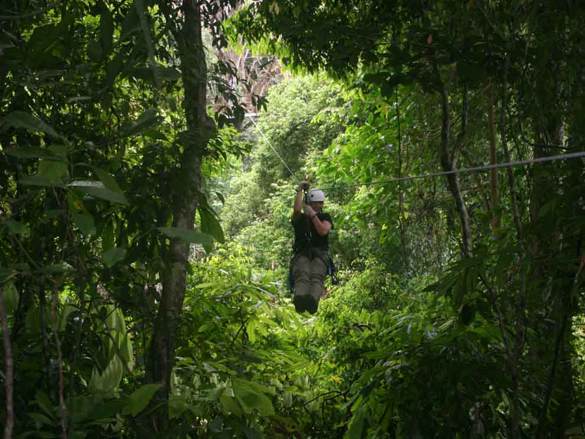
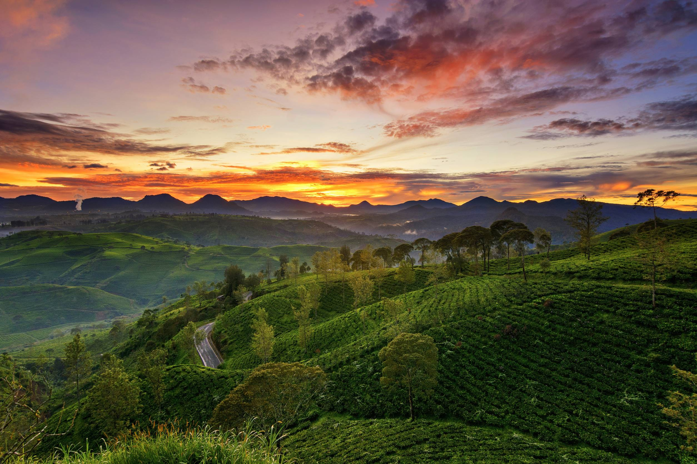
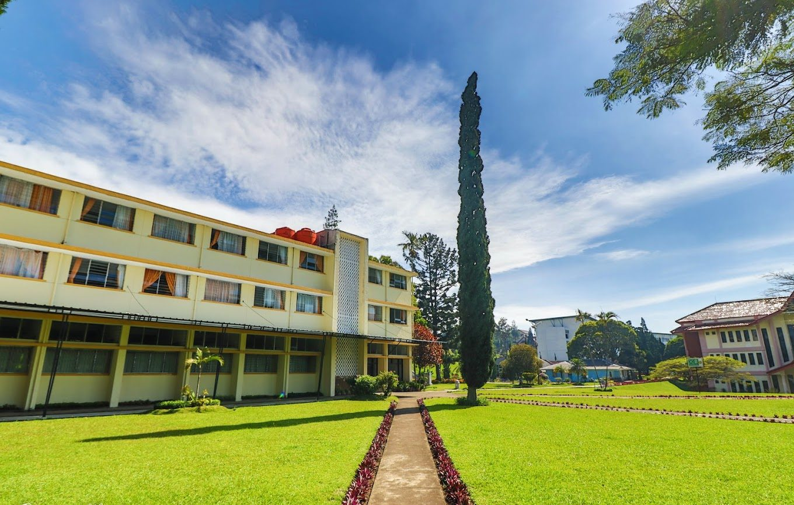
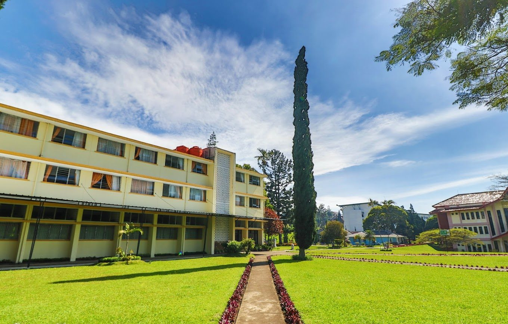
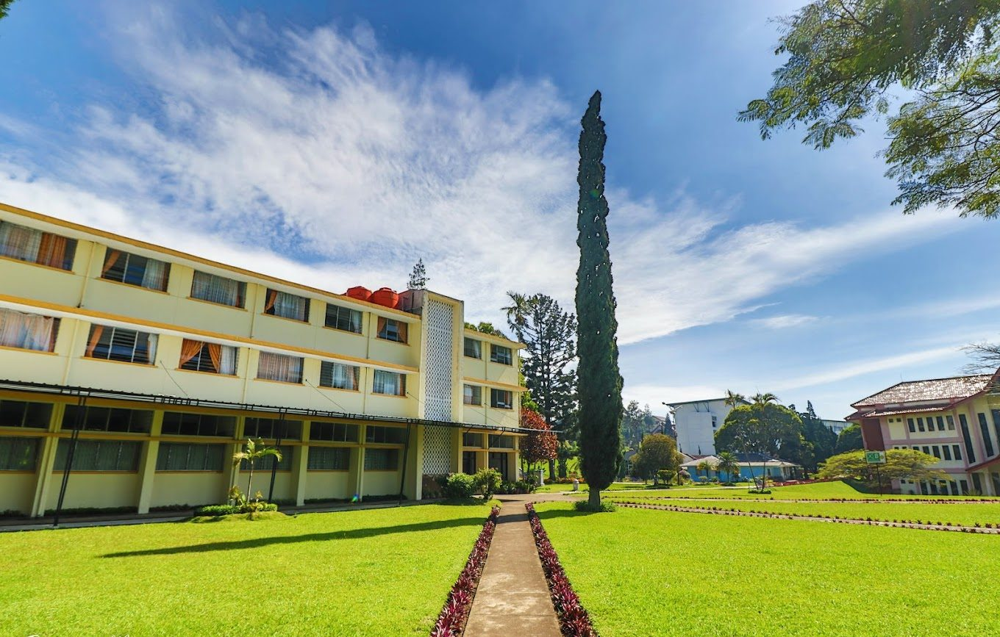

Halaman ini berisi eksplorasi bebas bertema alam liar ala National Geographic. Berisi foto-foto, fakta unik, artikel mini, dan video dokumenter untuk memberi pengalaman eksplorasi yang lebih hidup.
Galeri Eksplorasi



 



"The Earth is what we all have in common."
— Wendell Berry
Video Dokumenter
Artikel Eksplorasi Mini
Mengapa Eksplorasi Alam Penting?
Eksplorasi mini ini jadi ruang kecil untuk nguji rasa penasaran kita. Di sini, setiap langkah dibuat sederhana tapi tetap ngasih pengalaman baru. Mulai dari nyoba hal-hal kecil, ngeliat detail yang sering kelewat, sampai nemuin sudut pandang baru dari sesuatu yang kelihatannya biasa aja.
Dengan memahami alam, kita bisa lebih peduli terhadap pelestarian lingkungan untuk generasi mendatang.